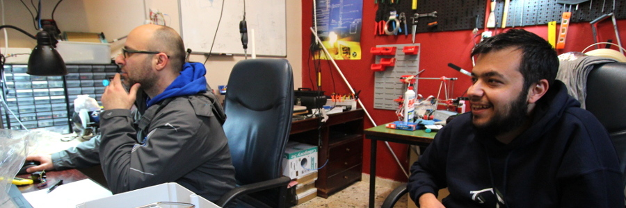

Team
SatNOGS project is a collaborative open project developed initially as part of NASA SpaceApps Challenge 2014 in hackerspace.gr Athens location.
The core team members are listed below in alphabetical order with their main focus areas.
- Ioannis Charitopoulos (prediction & tracking software)
- Nikitas Chronas (tracking harware design and arduino code)
- Evangelos Diamantis (onboard computer setup)
- Theodore Dimitriou (tracking mechanism design)
- Themistoklis Karafasoulis (antenna construction)
- Dimitrios Papadeas (tripod design and 3D printing)
- Pierros Papadeas (documentation, website and hardware design)
- Manthos Papamatthaiou (tracking mechanism design and 3D printing)
- Nikos Roussos (Web enabled SDR setup)
- Vasilis Tsiligiannis (antenna design, SDR and tracking setup)
- Agisilaos Zisimatos (tracking harware design and arduino code)

Contributing
SatNOGS project is in design phase and wants your contributions! We are looking for Satellite enthusiasts, HAM operators, tracking hardware experts, software ninjas that know why SDP8 is better than SGP4, and generally for space enthusiasts that would like to build and/or contribute to our project.